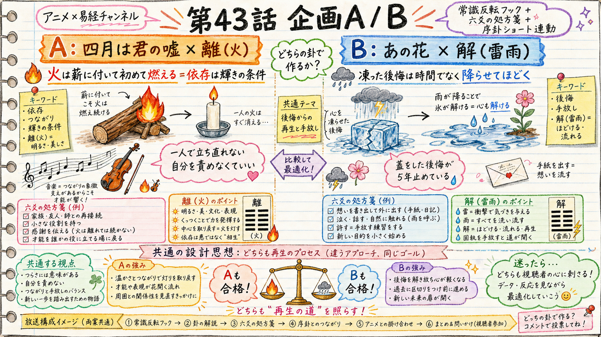

HaQei / アニメと易経 — 第43話 企画ゲート
第43話は、どちらの卦で作りますか？
残り22卦から「大型IP × 常識反転フック」で企画を2案立てました。両案とも独立採点で91点（合格ライン90）・卦辞爻辞は db と完全一致・冒頭ゲートも通過。どちらも作れる状態です。あなたが1案を選んで承認すると、その卦で台本制作に入ります。
TL;DR
- A：四月は君の嘘 × 離（火）— 「火は薪に付いて初めて燃える＝依存は輝きの条件」。一人で立ち直れない自分を責めなくていい。
- B：あの花 × 解（雷雨）— 「凍った後悔は時間でなく"降らせて"ほどく」。5年蓋をしてきた後悔に、雷雨のように一度降らせる。
- 両案とも 91点合格・序卦ショート連動あり（A=坎→離／B=蹇→解）・処方箋は六爻を"今日やめる/小さく始める"具体行動に接地。→ あなたがA/Bを選ぶだけ。

A（四月は君の嘘×離＝火）と B（あの花×解＝雷雨）の比較。どちらも「再生のプロセス」を別アプローチで描く。
現状（一次情報・2026-07-23）
yt-stats 実測。ep43をどう設計するかの前提。
| 指標 | 実態 | ep43への反映 |
|---|
| 登録者 | 91 / 1000（総再生 82,964） | 登録1000まで最優先。ショート→登録変換が第一律速 |
| ロング初速 | ep42=44再生・ep41=16再生と低い（入口=サムネ/タイトルが律速だが H-CTR-1 で no_lift 判明済） | CTRは監視のみ。複利の本命＝冒頭維持(H52)と常識反転フック |
| ショート | 787〜1113再生で回っている（いいね率が登録変換の律速＝H51） | ep43ショート＝序卦型・いいね率主指標（再生数で判定しない） |
| 幕配分 | v2.3（観察1.5-2.5分/種明かし2-3分下限/処方箋1.5-3分） | 両案とも v2.3 で設計。冒頭0-8秒 約束オーバーレイ(H52)適用 |
2案の中身
卦辞・爻辞は db/hexagrams.json から実引き（記憶で書かない）。作品事実は台本Step2でweb一次裏取り。
A案独立採点 91点 ✓合格
四月は君の嘘 × 離（火・#30 ䷝）
中心命題：有馬公生は、かをりという火に付いて初めて、失った音を取り戻した——離（火）は薪に付いて燃える卦。依存は弱さではなく、公生が再び弾くための条件だった。
痛点：誰かがいないと前に進めない自分を、依存的で弱いと責める
反転：火は薪に付いて初めて燃える。付着（依存）は弱さでなく輝きの条件
卦（db実引き）
- 卦辞「離、利貞、亨。畜牝牛吉」＝柔順を養えば吉
- 象「明両作、離。大人以継明照于四方」＝明かりを継いで四方を照らす
- 核＝麗（つく）。火は単独で存在できず薪に付いて燃える。二爻・五爻が陰＝「柔らかく寄る」が輝きの芯
6幕（v2.3）
- 違和感：「一人で立ち直らなきゃ、と思う夜」（日常語）
- 観察：音を失った公生がかをりに引きずられ再び弾く
- 種明かし：離＝火は薪に付いて燃える（六爻図）
- 刃：「自立」を美徳にしすぎて火を借りるのを恥じ、くすぶっていないか（自分へ）
- 処方箋：↓六爻
- 余韻：一人で燃えられないのは欠陥でなく、火という生き方
処方箋＝離の六爻（今日やめる/小さく始める）
- 初「履錯然」＝頼り先を決めきる前に、違う3人に小さく1つずつ頼る
- 二「黄離元吉」＝一人に全部を預けず、頼み事を週1つに絞る
- 三「日昃之離」＝火が傾く前に受け取り切る（燃え尽きも延命もしない中庸）
- 四「焚如死如棄如」＝一晩で全部をぶつける依存をやめ2〜3人に分散
- 五「出涕沱若」＝火が去るとき平気なふりをやめ、一度ちゃんと寂しがる
- 上「王用出征」＝燃えていない惰性の依存を一つ断ち切る
序卦ショート連動
坎(#29・既出ep22カイジ)→離(#30)。「穴に落ちた者は何かに付いて身を支える」。ショート「二十九の次が、三十」。
B案独立採点 91点 ✓合格
あの花 × 解（雷雨・#40 ䷧）
中心命題：超平和バスターズは、めんまの死に蓋をして5年間凍りついていた。解（雷雨）が教えるのは——ほどくのは相手を赦すためでなく、自分が前に進むため。凍った緊張は時間では解けず、一度降らせて（泣いて/言って）初めてゆるむ。
痛点：蓋をした後悔が何年も自分を止めている。時間が解決すると放置している
反転：時間では解けない。雷雨のように一度降らせて初めてほどける。赦すのは自分のため
卦（db実引き）
- 卦辞「解、利西南。无所往、其来復吉。有攸往、夙吉」
- 象「雷雨作、解。君子以赦過宥罪」＝過ちを赦し罪をゆるめる
- 核＝緩（ほどける）。冬の張りつめ（蹇＝凍結）の後、雷雨で一気に氷が解ける
6幕（v2.3）
- 違和感：「何年も前なのに、ふと胸が締まる言えなかった一言」（日常語）
- 観察：5人がめんまの死で離散し5年触れず、幽霊で噴き出す
- 種明かし：解＝雷雨。時間でなく降らせて解ける（六爻図）
- 刃：「もう済んだこと」と凍らせたまま持ち歩いていないか（自分へ）
- 処方箋：↓六爻
- 余韻：凍ったものは時間でなく雷雨でほどく。泣いていい
処方箋＝解の六爻（今日やめる/小さく始める）
- 初「无咎」＝「まだ勇気がない」と待つのをやめ、今日その名前を一度声に出す
- 二「田獲三狐、得黄矢」＝言い訳を3つ書き出して線で消す
- 三「負且乗」＝半分話し半分隠すのをやめる（核心まで言うか、触れないか）
- 四「解而拇」＝一番硬いこだわりを一つ手放す（もう責めない相手を一人選ぶ）
- 五「君子維有解」＝相手が変わるのを待たず、自分が先に終わりにする
- 上「公用射隼」＝避けてきた核心に、一度だけ決めていた言葉を伝える
序卦ショート連動
蹇(#39・既出ep17呪術廻戦)→解(#40)。「行き悩みは終わり続けない、ほどける番が来る」。ショート「三十九の次が、四十」。
共通の設計（両案とも適用）
- 常識反転フック（H56）＝痛点を日常語で示し、卦で裏返す
- 幕配分 v2.3・冒頭0-8秒 約束オーバーレイ（H52）・処方箋は六爻を具体行動に接地
- 成長仮説 H56：常識反転フックの自己投影コメント率/保存率が ep29-42中央値超えか（ショートはいいね率H51主指標・再生数で判定しない）
- タイトルは台本確定後（Step8.5）に決定。arm＝assert/ep_gua（title-arm assign予定）
- 刃は冒頭の場面・自分自身へ返す（社会/群衆へ飛ばさない）
◆ 判断：どちらの卦で第43話を作りますか？
両案とも作れる状態（91点合格）。差は「切り口」です。どちらか一つを選んで承認してください。決定後、その卦で content/063 に台本制作へ入ります。
A
四月は君の嘘 × 離（火）「依存は輝きの条件」
向く題材＝つながり/才能が花開く再生。世界級IP。感情の色は温かく明るい。序卦＝坎→離。
B
あの花 × 解（雷雨）「凍った後悔を降らせてほどく」
向く題材＝喪失/後悔に区切りをつける再生。世界級IP。感情の色は切なさ→解放。序卦＝蹇→解。
他
両方を別エピソード（ep43/ep44）で作る／どちらも保留して別の残り卦（屯・晋・豊・巽・中孚 等）で立て直す、等があればその旨を。
残り卦 22
A: 離#30（坎→離）
B: 解#40（蹇→解）
仮説 H56
公開枠 未claim（次工程で確保）
まとめ：第43話は「大型IP × 常識反転 × 六爻の処方箋」という現行の勝ち筋で、A（火・依存の肯定）とB（雷雨・後悔の解放）の2案を用意しました。両案とも独立採点91点・db照合済みで、品質はどちらも担保されています。
あなたがA/Bを選ぶだけで、その日のうちに台本へ進めます。
採点証跡：analytics/creative-harness/concept-ep43/fork-scores.json ｜ 企画書：scratchpad/ep43-concept-A / -B.md ｜ 卦辞爻辞：db/hexagrams.json #30 離 / #40 解